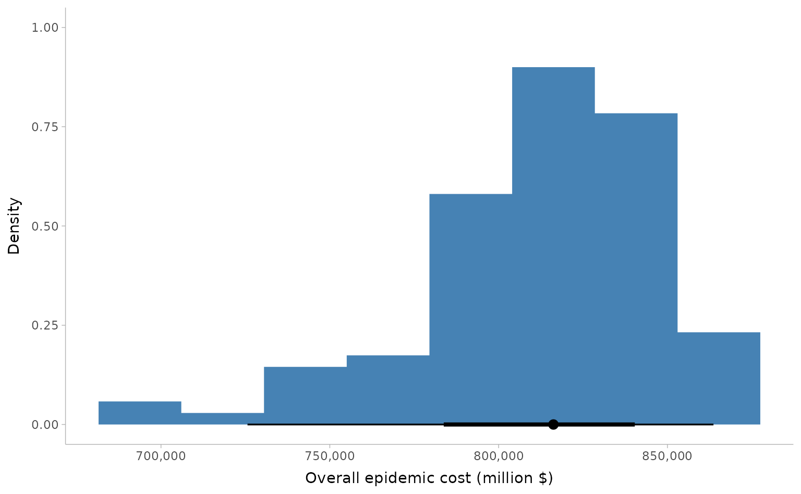

Exploring uncertainty in pandemic costs due to parameter uncertainty
Source:vignettes/parameter_uncertainty.Rmd
parameter_uncertainty.RmdThis vignette shows how to explore the effect of model parameter uncertainty on epidemic costs using daedalus.
Here we explore the effect of uncertainty in , which is a common use case in the initial stages of a novel pandemic when estimates of are less robust.
We shall model uncertainty in a scenario of a SARS-2004 like infection outbreak in a country chosen at random, Norway.
We focus on infection parameter uncertainty, but a similar approach can be applied to country characteristics.
# load {daedalus} and helper packages
library(daedalus)
library(data.table)
library(ggplot2)
library(ggdist)General approach
The general approach is:
Create multiple
<daedalus_infection>objects with distinct values of parameters;Run
daedalus()on each distinct<daedalus_infection>object;Get costs from each model output object.
Drawing parameters from a distribution
First, we access the SARS 2004 provided in daedalus, and using this as a mean we draw 100 samples from a normal distribution with a standard deviation of 0.1.
# get SARS-1 R0
sars_2004 <- daedalus_infection("sars_cov_1")
sars_2004_r0 <- get_data(sars_2004, "r0")
# draw samples from a normal distribution
r0_samples <- rnorm(100, sars_2004_r0, sd = 0.1)Create infection objects
Next we create <daedalus_infection> objects to
hold the
values.
Note that future versions of daedalus will include better support for parameter uncertainty, such as that provided by the distributional package.
# make a list of infection objects
infection_list <- lapply(
r0_samples, function(x) daedalus_infection("sars_cov_1", r0 = x)
)
# View an infection object
infection_list[[1]]
#> <daedalus_infection>
#> • Epidemic name: sars_cov_1
#> • R0: 1.68735461892577
#> • sigma: 0.217
#> • p_sigma: 0.867
#> • epsilon: 0.58
#> • rho: 0.003
#> • eta: 0.018, 0.082, 0.018, and 0.246
#> • omega: 0.012, 0.012, 0.012, and 0.012
#> • gamma_Ia: 0.476
#> • gamma_Is: 0.25
#> • gamma_H: 0.034, 0.034, 0.034, and 0.034Run DAEDALUS model for each infection object
We run the model for Norway with each infection object, representing different values of .
We assume that there is no vaccine investment in advance of the outbreak. Vaccination with a pathogen specific vaccine is thus assumed to begin 1 year after the epidemic start date, similar to the situation for Covid-19.
We also assume for this example that this outbreak is unmitigated and allowed to become an epidemic.
The model runs for 600 days or a little over 1.5 years.
Note that running daedalus()
iteratively may take some time, as the function checks the inputs and
internally prepares parameters each time, as well as preparing the
output data. Future package versions aim to streamline these steps and
provide a stripped down version of the function optimised for scenario
modelling for parameter fitting or with parameter uncertainty.
Users can run the model iteratively over the samples in parallel using frameworks such as the furrr package.
# run daedalus()
output_list <- lapply(
infection_list, daedalus,
country = "Norway"
)Get epidemic costs
We can get the total epidemic costs — a combination of life years
lost, educational losses leading to lost future earnings, and economic
losses due to worker illness — using the helper function
get_costs() and passing the option
summarise_as = "total".
We can plot the total costs to view the distribution using the ggdist package to visualise the distribution.
# Use {ggplot2} to visualise the output
# `stat_histinterval()` is from {ggdist}
ggplot() +
stat_histinterval(
aes(costs),
fill = "steelblue"
) +
scale_x_continuous(
labels = scales::comma_format()
) +
theme_tidybayes() +
labs(
x = "Overall epidemic cost (million $)",
y = "Density"
)